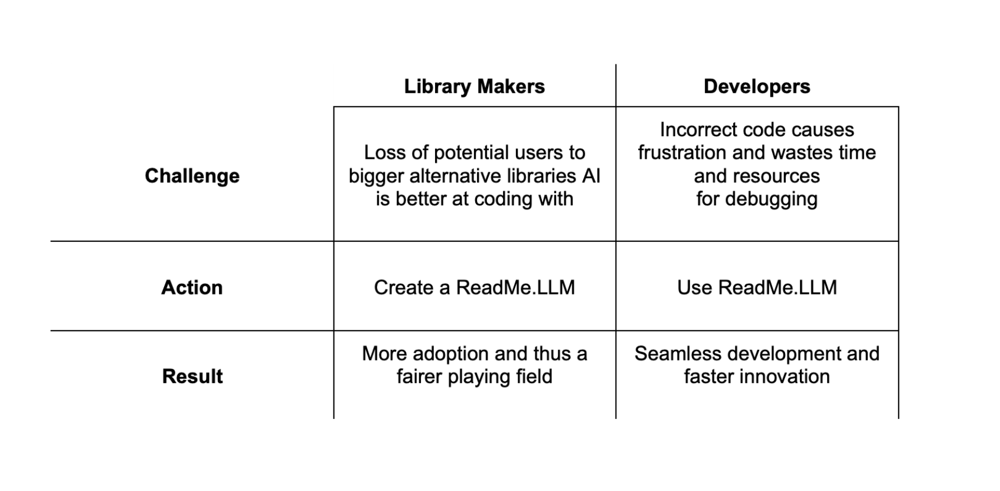

About

ReadMe.LLM is a novel framework designed to enhance code generation tasks performed by Large Language Models (LLMs) by providing essential information about a software library. Without ReadMe.LLM, models achieved a performance of only ~20%. However, when equipped with ReadMe.LLM, performance consistently increased to near-perfect accuracy with one case study demonstrating 100% performance across all tested models. Inspired by developer-oriented ReadMe.md files, ReadMe.LLM serves as the crucial companion file a software library needs for it to be best utilized by a given model.
Library Maker workflow:

Developer workflow:

ReadMe.llm can bring immense value to both library makers and developers as outline in the chart below:
Contact
readmellm.ucb@gmail.com
Workflow
Follow the steps in the screen shot below to generate high quality code with the help of ReadMe.LLM!


Here is an example task using the Supervision Library, feel free to try it with and without ReadMe.LLM! See what happens
Task:
Using the Supervision Library, find all the cars in the picture and annotate them with a percentage bar displaying the confidence that the annotated item is a car. Save the bounding boxes of the cars, and use the coordinates to crop the image to the respective cars. Show the annotated picture and print out the cropped images of each car.
ReadMe.LLM:
Here is the expected output if the code is correct